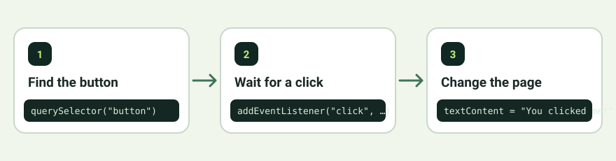

From a static page to an experience
JavaScript is a programming language commonly used to add behavior to webpages. It can help a page check a form, update information, open a menu, or respond when a button is clicked. This is what makes many websites feel interactive rather than fixed.
A useful way to understand JavaScript is to think about events. An event is something that happens, such as a click or a key press. JavaScript can listen for that event and run code in response.
const button = document.querySelector("button");
button.addEventListener("click", () => {
button.textContent = "You clicked me!";
});First, the code finds a button on the page. Next, it waits for a click. When the click happens, the button's words change. A small behavior like this is the starting point for more complex features.

How the three pieces work together
The content
Creates the button on the page.
The appearance
Gives the button a shape, size, and color.
The response
Changes the button after a click.
Once you understand these three roles, it becomes easier to explore modern frameworks, web applications, and larger projects. The tools may become more advanced, but the basic ideas remain useful.
A practical next step
Try creating a personal interests page with a heading, a short description, and a link. Then style it with CSS. After that, add a button using JavaScript and make it change a sentence. Each stage should work before you move to the next.
Free learning resources
These references can help you check your understanding and practice beyond this guide.
Build something small, test what you made, and try to explain why it works. Understanding grows through practice, not memorizing code line by line.
Back to Home